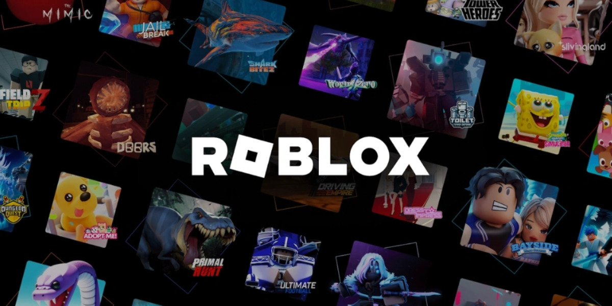

CONFIRMAT22 octombrie 2026
🇩🇿 Roblox revine în Algeria, dar fără chat

Roblox merge din nou în Algeria, după interdicția din septembrie 2025.
- 💬 Chatul rămâne oprit pentru toți jucătorii din Algeria, până când Roblox are moderare avansată în arabă și protecțiile cerute de autorități.
- 🤝 Algeria și Roblox au un acord preliminar: un program care îi învață pe dezvoltatorii locali să facă jocuri.
- 🛡️ Roblox a adăugat estimarea vârstei și a extins controlul parental.
- 🗣️ Lucrează și la suport mai bun pentru arabă și dialectul algerian, plus raportare mai rapidă.
Follow pe TikTok @vexu_online și abonare pe YouTube la VEXU Online. Follow = Au ce bile! 💥